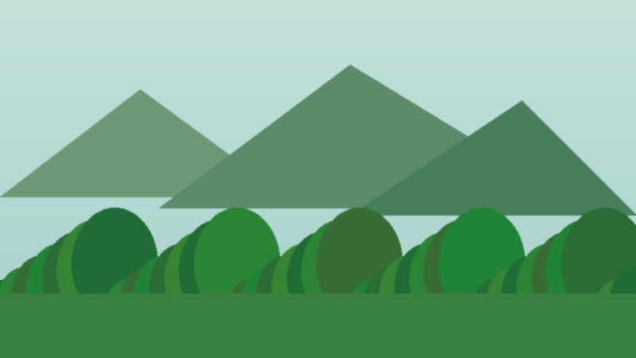

Explain
Introduce environmental protection in clear language.
This website presents environmental protection as a practical professional topic for a general audience. The goal is to show that sustainability is not only an abstract global issue, but also a set of choices that can be built into daily life, schools, homes, and small organizations. The site uses a clear three-page structure: a home page explaining the purpose of the project, an actions page listing habits people can follow, and a resources page that encourages visitors to keep learning and sharing information. The design uses green colors, direct navigation, original writing, and image cards so visitors can understand the topic quickly. On the web, the topic is presented through short sections, accessible images, one audio element, and JavaScript buttons that update content and change visual emphasis.
Click the button for one simple environmental action.

EcoFuture is organized around three simple goals for visitors.
Introduce environmental protection in clear language.
Show small habits that can reduce waste and save resources.
Guide visitors to continue learning and sharing useful ideas.